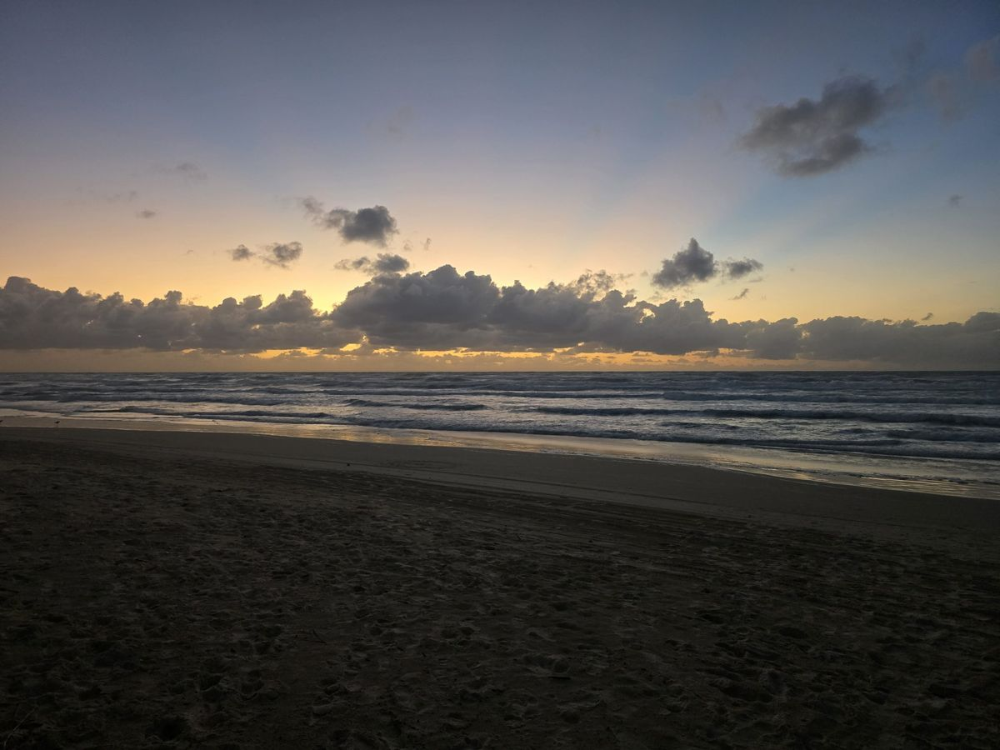
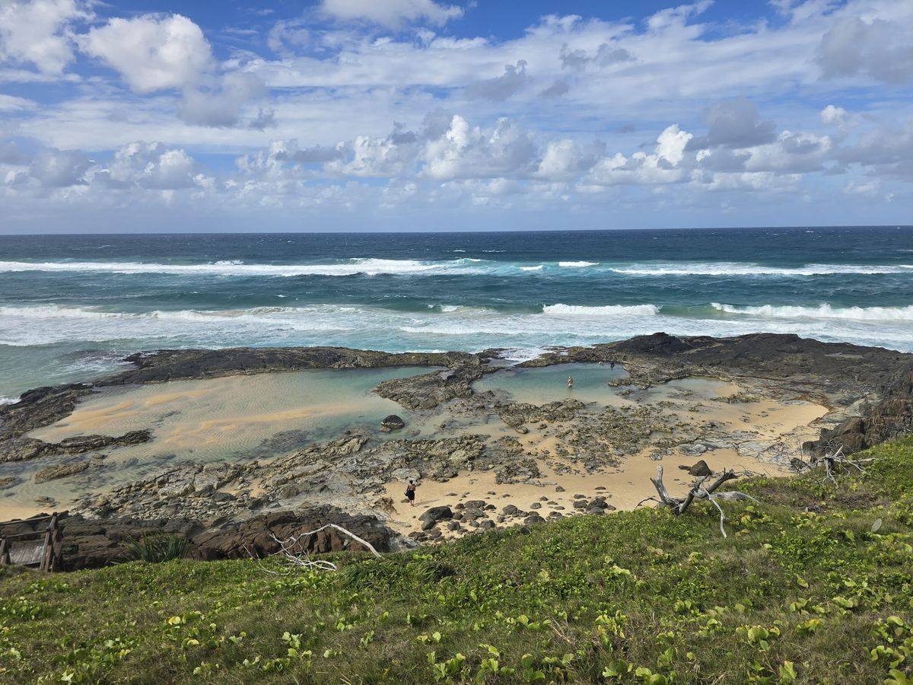
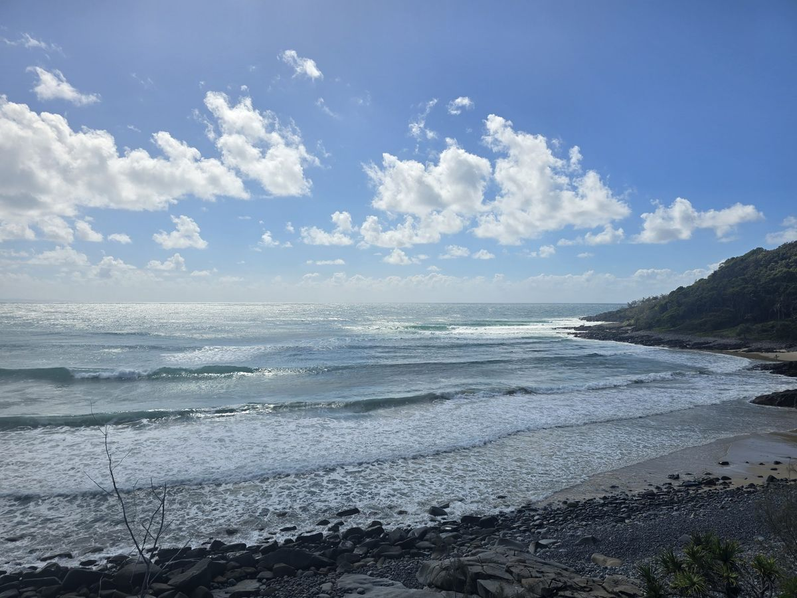
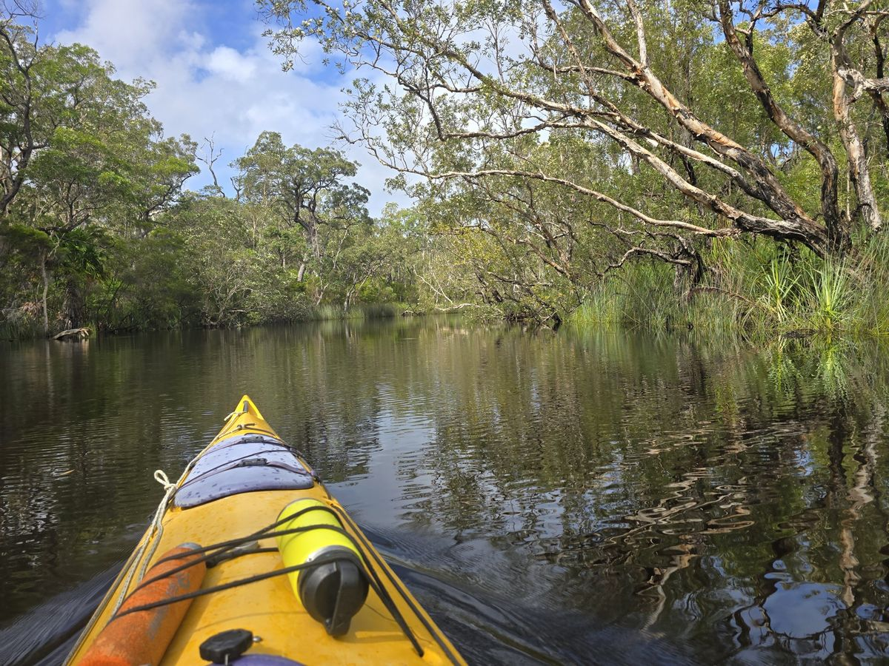
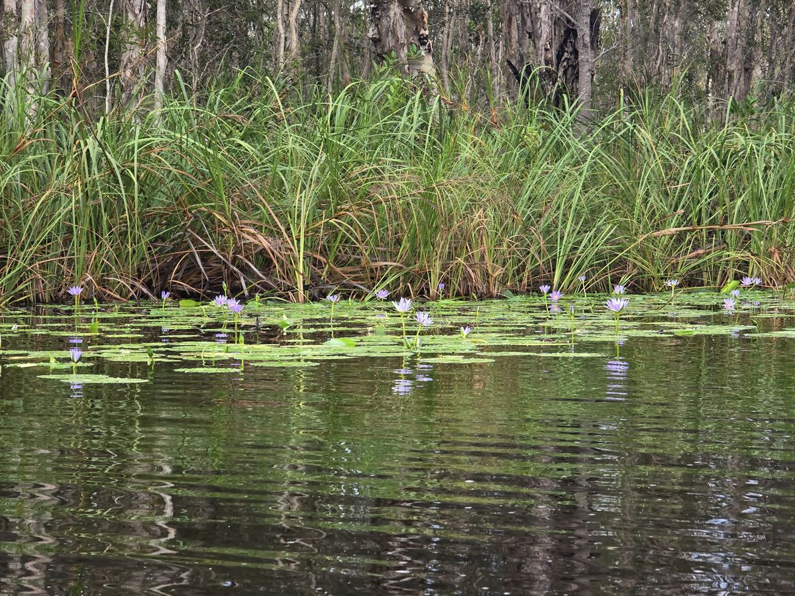
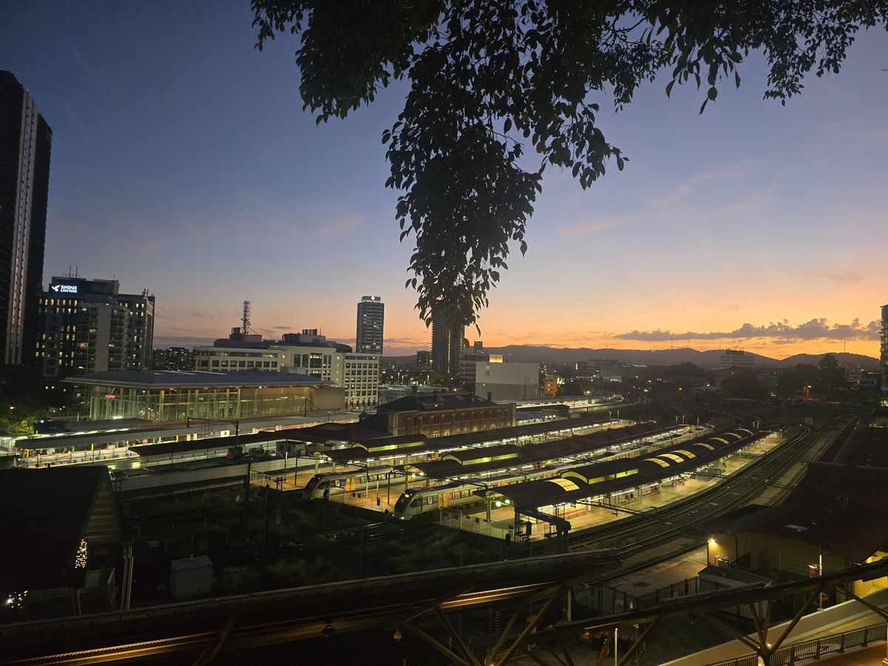

- 10 days
- 3-day K'gari 4WD tour
- Solo
- A$2,032.02 in paid bookings and coaches
Ad: some booking links on this page are, or will be, affiliate links. If you book through them I may earn a small commission, at no extra cost to you. I only link to places and trips I actually used and paid for myself, and I say plainly when something wasn't worth it.
Part of my 11 weeks on Australia's east coast and Tasmania. This page covers the Sunshine Coast, Noosa, K'gari (Fraser Island) and my last night in Brisbane only. Each region works as a block on its own, so you can do just this one or link it to others.
Days to allow
I spent 10 days here, from 24 April to 3 May. That covered all the main places. But I could happily have stayed a month and had a really nice holiday.
My 10 days went like this: 2 days and a bit on the Sunshine Coast, then 1 night in Noosa, a 3-day tour on K'gari, back to Noosa until 3 May, and 1 night in Brisbane before an early-afternoon flight north on 4 May.
Without the first days on the Sunshine Coast, the core of it is about 8 days: Noosa, the K'gari tour and a Brisbane night.
I got to the Sunshine Coast by coach from Brisbane on 23 April and spent that night at Oaks Sunshine Coast Seaforth Resort (A$192.60, booked on Booking.com). It was fine.
The route at a glance
Sunshine Coast → Noosa → K'gari (3-day 4WD tour, there and back from Noosa) → Noosa → Brisbane → fly to Proserpine for Airlie Beach (see the Whitsundays page).
I didn't hire a car. A friend drove me from the Sunshine Coast to Noosa, and the K'gari tour picked me up from my Noosa hotel and dropped me back. I used local buses round Noosa. On 4 May I took the train to Brisbane Airport.
Getting around by coach. For the long legs I used two coach companies: Greyhound Australia and Premier Motor Service. They were simple and cheap.
- Brisbane → Maroochydore with Greyhound, 23 April: A$51.
- Noosa Junction → Brisbane with Premier: A$43, which is A$33 plus A$10 for an extra bag.
- Bags: Premier allows one 20 kg bag and charges A$10 for a second. Greyhound allows two.
If you don't have a friend with a car: Translink bus 620 runs Maroochydore → Noosa Heads via Peregian Beach, 7 days a week, and takes roughly an hour. Check the fare on Translink's journey planner. Rich to update: the Translink 620 fare.
My days in Noosa didn't follow the plan. The kayak tour moved from 30 April to 2 May, the coastal walk moved forward to 30 April, and I stayed in Noosa a night longer, going to Brisbane on 3 May instead of 2 May.
What it really cost
I travelled on my own here, so every cost is one person's and nothing was shared. The bookings below were paid in Australian dollars, so I've shown what I paid in AUD.
| Per person (solo) | |
|---|---|
| Oaks Sunshine Coast Seaforth Resort, 23 April (1 night) | A$192.60 paid |
| Friend's place, 24–25 April (2 nights) | Free |
| Villa Noosa Hotel, 26 April (1 night) | A$150.30 paid |
| Drop Bear 3-day K'gari tour, 27–29 April (2 nights, meals included), booked direct | A$727 paid |
| Noosa Lakes Resort, 29 April to 2 May (3 nights) | A$518.85 paid |
| Noosa Lakes Resort, extra night, 2 May (booked separately) | Rich to update: price of the extra night |
| Kanu Kapers Everglades kayak tour, incl. shuttle, booked direct | A$235.87 paid |
| Soho Brisbane, 3 May (1 night) | A$113.40 paid |
| Greyhound, Brisbane → Maroochydore | A$51 paid |
| Premier, Noosa Junction → Brisbane (incl. A$10 extra bag) | A$43 paid |
| Scenic flight over K'gari | Rich to update: operator and price |
| Total of the paid items above | A$2,032.02, plus the items marked Rich to update |
That total leaves out the paddleboard hire, local buses, food and pickleball, which aren't in it.
Before the trip, my plan estimated about £915–1,310 per person for these days, adding up its daily estimates. That was an estimate, not what I spent.
The flight out (Brisbane → Proserpine, Virgin Australia, 4 May) cost A$163.60 paid. It's covered on the Whitsundays page.
Without free stays: 2 of my nights were free with a friend, and the friend gave me a lift to Noosa, so a visitor will pay more than I did.
- Sunshine Coast nights: a mid-range room costs about what I paid for my one night at Oaks Sunshine Coast Seaforth Resort (A$192.60).
- Sunshine Coast to Noosa: take the Translink 620 bus (see above). Rich to update: the fare.
Tip: upgrade your room on the Drop Bear tour. The upgrade gave me a private glamping room with its own toilet, shower and large bed. Others shared a room of the same size between four. The cheapest option was very small cabins in a separate building. It was worth every penny for my age and comfort, and I'd hugely recommend it. Rich to update: the upgrade price, and whether it's in the A$727.
Day by day
Days 1–3 · 24–26 AprilSunshine Coast, with a friend


After the best breakfast I'd had all trip, I spent a couple of hours wandering up the beach. Then my friend picked me up for coffee, a wander, lunch and a swim in the sea, and a really nice burger at Grill'd in the evening.
The weekend was rainy, and mostly catch-up time with some shopping. When the weather broke I managed a couple of walks up some pretty hills. On 26 April my friend drove me to Noosa, I packed for the tour and found a steak dinner. Night at Villa Noosa Hotel.
Day 4 · 27 AprilK'gari, day 1


A 7am pickup (it was late) took me and 28 others to the Drop Bear HQ for a briefing and to sort the luggage. Then we all piled into 4 cars and headed for the island: about 2 hours and a ferry. I drove first on the beach in our 90s Land Cruiser. Ace fun. It took an hour to reach the camp.
After lunch we drove further up the beach and walked to an inland lake for a swim, a sunbathe and a chat. Back at camp we had 20 minutes before sunset, so we wandered down to the beach to watch the staff fishing, and a dingo chilling on the sand. I had an ace room all to myself, with its own shower and loo. That was the upgrade (see the tip above).
Day 5 · 28 AprilK'gari, day 2


We headed to the north of the island, which is 110 km long. First stop was a creek, where we floated down the river in tubes.
There was a plane on the beach. The scenic flight isn't part of the tour. It's run privately on the island, and you arrange it through the guides on the day. Nobody wanted to go at first, so I asked the price to go alone. Then several others joined and we split the cost, which made it a lot cheaper. It was a great flight all round the island. The pilot did some steep turns, which scared everyone silly. Landing on the beach past the shipwreck was a great memory.
Then a huge cliff, where we heard about its dark history: our guide told us that white settlers pushed local women and children off it while the men were away at a meeting, then took over the island.
After that, Champagne Pools: a set of natural rock pools that fill with seawater and bubble like a hot tub. On the way back, as the sun was setting, we stopped at the Maheno shipwreck and had it all to ourselves. I'd already seen it from the air, but up close was pretty cool.
Back at camp I did some more fishing with the staff, then a good night round the fire with lots of stories. We tried for star photos on the beach, but the moon was too bright. Great day.
Day 6 · 29 AprilK'gari, day 3, and back to Noosa


My plan had Lake Wabby and the Pinnacles (the coloured sands) for the last day, with the tour back in Noosa around 5–6pm. The lake on day 3 was Lake McKenzie (Boorangoora), I think. My photos from the day show a clear freshwater lake with white sand and a rainforest walk. Night at Noosa Lakes Resort, which I really liked.
Day 7 · 30 AprilNoosa coastal walk


I was shattered, so I had a semi-chilled day. I caught the bus into Noosa Heads and did a lovely hike along the coast and through rainforest. A marginal lunch at the RSL and a wander round Noosa. Then a 40-minute bus to pickleball (good games), and I blagged a lift back.
Day 8 · 1 MayStand-up paddle surfing

Great day. I hired a stand-up paddleboard straight off the beach from a woman running a hire stand on the sand. She was very friendly and helpful. I took the board out into the surf. It worked a treat and I caught loads of waves. It was overcast, so I didn't burn. Lunch at the local surf club was the best food I'd had yet: spaghetti with grilled chicken. In the afternoon I wandered to the shops to replace my GoPro, and went for a DJI instead.
Day 9 · 2 MayNoosa Everglades kayak


Kanu Kapers picked me up from the hotel, and we saw some roos on the way. It was a rainy day, which was fine. The forecast was for much stronger wind, so they moved part of the tour to a sheltered area. That meant a longer drive at the start, but it avoided an open lake in strong wind that some of the group couldn't have handled. A lovely day paddling along the river. We didn't see many animals, but it was a nice chilled day. Steak back at the same restaurant as the day before, then a lovely night walk along the beach. I missed the bus, so I waited in the pub for the next one.
That night I stayed an extra night at Noosa Lakes Resort, booked separately from my first 3 nights.
Day 10 · 3 MayBack to Brisbane


I had to come back to Brisbane for the flight the next day. An easy coach journey with Premier. Soho Brisbane was fine. Mexican lunch in town, then pickleball in a sketchy part of town: the games went well, but I was glad to get out before dark. Italian on the river in the evening (lasagne, just OK), a couple of beers on the way home, a live band and a jazz club.
Honestly, I'm not a fan of Brisbane. Of all the cities on my trip, it's probably the worst laid out. It's a faff to get anywhere on foot, because the train lines cut off a lot of walking routes and force big detours. I also found the food on this trip pretty poor overall.
Travel out (4 May): train to Brisbane Airport and a Virgin Australia flight to Proserpine (12:45–14:35) for Airlie Beach. That day is on the Whitsundays page.
Weather plan B
- Rain on the Sunshine Coast: the weekend of 25–26 April was wet. I used the breaks in the weather for short walks up the hills.
- Wind on the Everglades kayak: the forecast was much windier, so Kanu Kapers moved part of the tour to a sheltered area. You get a longer drive at the start, but you avoid an open lake in strong wind. The trip still runs.
- Overcast in Noosa: a cloudy day turned out to be good for stand-up paddle surfing, as I didn't get burnt.
- K'gari: the tour has a rough itinerary that flexes with the weather, and the guides try to fit in as much as possible. The seas were really rough on a couple of nights, but nothing noticeable changed. Maybe a few slightly different stops.
Do this / skip this
Do this
- A 3-day 4WD tour on K'gari. Driving the beach yourself, an inland lake, Champagne Pools and the shipwreck at sunset.
- Tip: upgrade your room on the Drop Bear tour. A private glamping room with its own toilet, shower and large bed. Worth every penny for my age and comfort. I'd hugely recommend it.
- The scenic flight from the beach on K'gari. A great way to see the whole island. It's a bit expensive, but that's expected somewhere so remote. It's not a must, but I'd recommend it if you have the budget. Tip: ask the price, and others may join you to share it.
- The Noosa coastal walk along the coast and through the rainforest.
- The Everglades kayak with Kanu Kapers, if you want a calm, chilled day. Don't expect lots of animals.
- Noosa Lakes Resort. I really liked it.
Do differently
- Keep the day after the K'gari tour easy. I was shattered the next morning and switched to a semi-chilled day.
- Give yourself longer. I could happily have stayed a month.
Skip
- Brisbane, as a place to spend time. Treat it as a stop between places. It's a faff to get around on foot because the train lines cut off walking routes.
- Nothing else. Everything I did here was worthwhile.
Where I stayed
Prices are what I paid for the room. I was on my own, so a couple sharing would pay less each. I booked almost all of these on Booking.com.
| Nights | Place | Paid | What I thought | |
|---|---|---|---|---|
| 23 Apr (1 night) | Oaks Sunshine Coast Seaforth Resort | A$192.60 | Fine | Booking.com (link coming) |
| 24–25 Apr (2 nights) | A friend's place, on the Sunshine Coast | Free | ||
| 26 Apr (1 night) | Villa Noosa Hotel, Noosa | A$150.30 | Fine | Booking.com (link coming) |
| 27–28 Apr (2 nights) | K'gari Beachfront Eco Retreat | Included in the Drop Bear tour | An ace room all to myself, with its own shower and loo | Part of the tour |
| 29 Apr to 2 May (3 nights) | Noosa Lakes Resort, Noosa | A$518.85 | I really liked it | Booking.com (link coming) |
| 2 May (1 extra night) | Noosa Lakes Resort, Noosa (booked separately) | Rich to update: price | I really liked it | Booking.com (link coming) |
| 3 May (1 night) | Soho Brisbane | A$113.40 | Fine | Booking.com (link coming) |